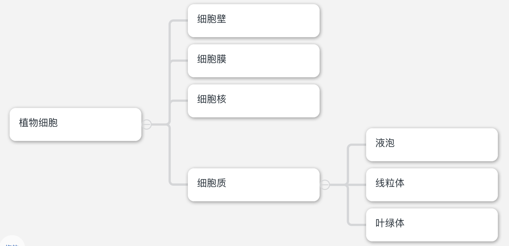
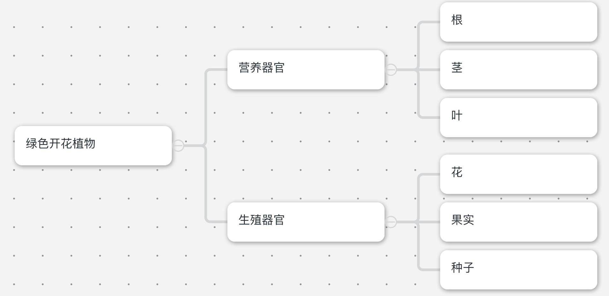
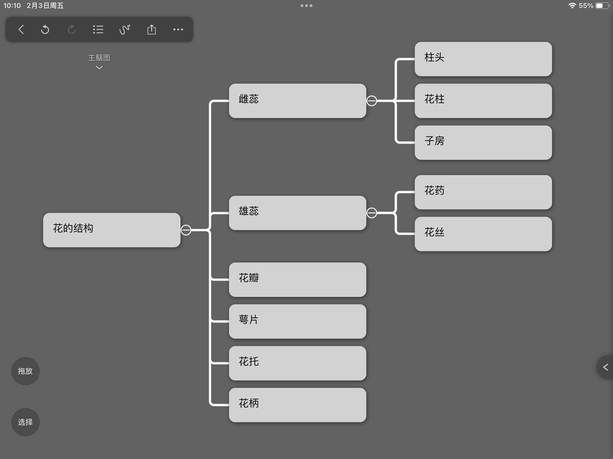
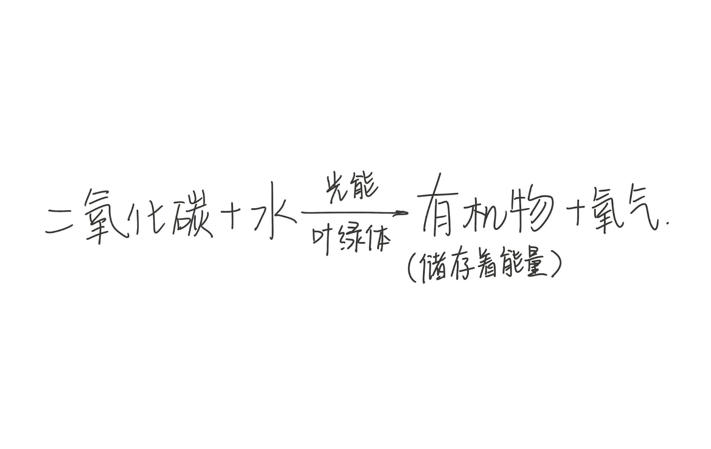

生物的特征
生态系统的定义：环境中影响生物的生活和分布的因素叫做生态因素
生态因素的分类
生物因素对生物的影响
| 生物因素 | 定义 |
| 种类互助 | 同种生物在生活中互相协作，以维持生存的现象 |
| 种类斗争 | -3同种生物之间，由于争夺食物、栖息地或其他生活条件而发生斗争 |
| 捕食关系 | 指一种生物以另一种生物为食 |
| 竞争关系 | 指生活在同一地区的生物，争夺资源和空间等 |
| 共生关系 | 两种生物共同生活在一起，互相依赖，彼此有利（同生共死） |
| 寄生关系 | 指两种生物一起生活，一方受利而另一方受害（损人利己） |
生物对环境的适应和影响
生态系统的定义：在一定时间范围内，生物与环境所形成的统一的整体叫做生态系统
生态系统的种类
生态系统中生物的组成
食物链和食物网
食物链的定义：在生态系统中，不同生物之间由于吃与被吃的关系而形成链状结构，叫做食物链
食物链的书写规则
食物网的定义：在一个生态系统中，往往有许多食物链，他们彼此交错，形成了食物网
有毒物质积累问题
生态系统的自我调节能力
生物圈是最大的生态系统
生物圈分布：向上可达10km高度，向下可达10km深度。包括大气圈底部，水圈的大部和岩石圈表面
生物圈是一个统一的整体
使用显微镜
显微镜的结构
显微镜的使用
污点位置判断步骤
从目镜内看到的是倒像（旋转180度）；一台显微镜的目镜与物镜放大倍数乘积就是该显微镜的放大倍数。
将物像移动到视野中央———物像偏向哪一方，就往哪一方移动
常见的拨片标本种类
制作洋葱细胞临时装片
植物细胞的基本结构
| 结构名称 | 功能 | 备注 |
| 细胞壁 | 保护和支持细胞 | 最外层 |
| 细胞膜 | 保护、控制物质进出 | 紧贴细胞壁，光学显微镜很难看清楚 |
| 细胞核 | 控制细胞生长、发育、遗传 | |
| 线粒体 | 呼吸作用的主要场所 | 细胞质内 |
| 叶绿体 | 光合作用的场所 | 细胞质内 |
| 液泡 | 贮藏各种物质，如色素、糖分 | 细胞质内 |
保护作用：将细胞内部和外界分开，使细胞拥有一个相对稳定的内部环境
控制物质进出：细胞膜具有一定的选择性，让有用的物质进入细胞，无用、有害的物质排出细胞（对细胞有害的物质，不是不能进入，而是很难进入）
细胞中的能量转换器
不是所有植物细胞都含有叶绿体，例如根细胞不含有叶绿体
制作人的口腔上皮细胞临时装片
滴加生理盐水的作用：防止口腔细胞吸水胀破，影响观察；维持渗透压平衡
动物细胞的基本结构
| 结构 | 功能 |
| 细胞膜 | 保护、控制物质进出 |
| 细胞质 | 新陈代谢的场所 |
| 细胞核 | 控制细胞生长、发育、遗传 |
动物细胞有线粒体，没有叶绿体和液泡
细胞的基本结构：细胞质、细胞膜、细胞核
细胞是构成生物体的基本单位
上图：细胞中的物质分类
细胞分裂的步骤
染色体是由DNA分子和蛋白质分子两种物质组成的。DNA是遗传物质，因此可以说染色体就是遗传物质的载体。
细胞分裂过程中染色体的变化
癌细胞
动物体的结构层次
细胞分化：在个体发育过程中，一个或一种细胞通过分裂产生后代，在形态、结构和生理功能上有差异性变化，这个过程叫做细胞分化
组织：由形态结构、功能相同的细胞联合在一起形成的细胞群称为“组织”
人体的四种基本组织
| 名称 | 功能 | 举例 |
| 上皮组织 | 保护、分泌功能 | 消化道上皮 |
| 肌肉组织 | 收缩、舒张功能 | 平滑肌、心肌等 |
| 结缔组织 | 支持、连接、营养、保护等 | 骨组织、血液 |
| 神经组织 | 感受刺激、传导神经冲动，在体内起到调节和控制作用 | - |
器官：由不同组织按照一定次序结合在一起构成行使一定功能的结构，叫做器官
系统：能够共同完成一种或几种生理功能的多个器官按照一定次序组合在一起，就构成了系统
植物的组织
| 名称 | 作用 | 位置 | 备注 |
| 保护组织 | 保护内部柔嫩部分 | 根茎叶表面 | |
| 机械组织 | 支撑和保护作用 | 茎、叶柄、叶片、花柄、果皮、种皮 |
构成机械组织的细胞细胞壁增厚 |
疏导组织 |
导管：运输水、无机盐 筛管：运输有机物 |
根茎叶等处 | 导管和筛管都属于疏导组织 导管由死细胞构成 |
| 营养组织 | 有储藏营养物质的功能（含有叶绿体的营养组织可进行光合作用） |
根、茎、叶、花、果实、种子 |
细胞壁薄、液泡较大 |
| 分生组织 | 不断产生新细胞，这些细胞将分化形成其他组织 | 茎尖、根尖等 |
细胞小、细胞壁薄、细胞核大、细胞质浓、具有很强的分裂能力 分生组织由一些不分化、终生保持分裂能力的细胞构成 |
生物体的结构层次(微观→宏观)：细胞、组织、器官、系统、生物体
观察步骤
草履虫的结构与功能
| 结构 | 功能 |
| 收集管 | 收集体内多余的水分和废物 |
| 伸缩泡 | 收集体内多余的水分和废物 |
| 纤毛 | 运动 |
| 表膜 | （表膜上的小孔可排除废物）（氧的输入，二氧化碳的输出都经过表膜） |
| 口沟 | 食物由口沟进入体内 |
| 食物泡 | 消化 |
| 胞肛 | 排出食物残渣 |
| 细胞质 | 新陈代谢的场所 |
| 细胞核（大核+小核） | 控制细胞生长、发育、遗传 |
草履虫的消化
食物经口沟进入细胞内，形成食物泡，食物泡随着细胞质流动，其中食物逐渐被消化，不能消化的食物残渣从胞肛排出
藻类植物
藻类植物有多细胞的，也有单细胞的
生活环境：淡水、海水、潮湿的陆地
形态结构
生殖：孢子生殖
藻类植物对人类和生物圈的作用
苔藓植物
生活环境：大多数生活在陆地上潮湿的环境中
形态结构:一般较矮小，通常具有根茎叶分化，不过茎中没有导管，叶中也没有叶脉，根非常简单（称为假根）
假根的作用：固定植物体
苔藓植物没有疏导组织
许多苔藓植物的叶只有一层上皮细胞，所以对环境中的有毒气体非常敏感，可以将苔藓植物作为监测环境空气污染程度的指示生物
苔藓植物的
蕨类植物
形态结构
蕨类植物的生殖：孢子生殖
种子植物
菜豆种子的结构(被子植物)（双子叶植物）
| 结构 | 功能 |
| 胚芽 | 发育成茎和叶（芽） |
| 胚轴 | 发育成茎和根连接的部分 |
| 胚根 | 发育成根 |
| 子叶 | 储存和转运种子萌发所需的营养物质 |
| 种皮 | 保护、减少水分散失 |
| 结构 | 功能 |
| 果皮和种皮 | 保护、减少水分散失 |
| 胚芽 | 发育成茎和叶（芽） |
| 胚轴 | 发育成茎和根连接的部分 |
| 胚根 | 发育成根 |
| 子叶 | 转运营养物质 |
| 胚乳 | 储存营养物质 |
胚的组成：胚芽、胚根、胚轴、子叶
胚乳不属于胚
玉米粒属于果实，不属于种子（果实=种子+果皮）
胚是新植物的幼体
双子叶植物种子和单子叶植物种子的对比
| 项目 | 双子叶植物种子 | 单子叶植物种子 |
| 子叶数 | 2 | 1 |
| 胚乳 | 大多数没有胚乳 | 大多数有胚乳 |
| 子叶功能 | 贮藏和转运营养物质 | 转运营养物质 |
| 相同点 | 有胚和种皮 | 有胚和种皮 |
裸子植物
裸子植物的根茎叶发达，有输导组织，可在贫瘠的土地上生长
我国被称为“裸子植物的故乡”
被子植物
被子植物的结构：根、茎、叶、花、果实、种子
被子植物体内有发达的疏导组织，方便运输水分和营养物质，一般都能开花结果
果实可以保护种子，不少果实可以帮助种子传播
被子植物的一生主要经历：种子的萌发→植株的生长→发育→繁殖→衰老→死亡
种子萌发的外界条件：适宜的温度、一定的水分、充足的空气
休眠期：生活在温带的种子，如果在秋季萌发，不久后冬季到来，幼苗就会被冻死。种子通过休眠的方式，躲过严冬再繁衍后代。（是植物长期适应环境的结果）
种子萌发的过程
生长最快的部分：根尖
| 名称 | 作用 | 形态 | 备注 |
| 成熟区 | 吸收水分、无机盐 | 大 | 成熟区表皮细胞一部分向外突出，形成根毛，是根吸收水和无机盐的主要部位 |
| 伸长区 | 伸长 | 大而紧密 | |
| 分生区 | 分裂分化 | 小而紧密 | |
| 根冠 | 保护 | 较大，不够紧密 |
幼根的生长一方面要靠分生区细胞分裂增加细胞数量，另一方面要靠伸长区细胞体积的增大
植株的芽可分为顶芽和侧芽
芽中有分生组织，分生组织的细胞分裂分化，形成新的枝条
植株生长所需的营养物质--水、无机盐、有机物
植物生长需要最多的是含氮、磷、钾的无机盐
缺少各种无机盐时植株的症状
| 缺少无机盐 | 植株 |
| 氮 | 植株矮小瘦弱，叶片发黄 |
| 磷 | 植株矮小瘦弱，叶片呈暗绿色，并出现紫色 |
| 钾 | 植株茎干软弱，容易倒伏，叶片边缘和尖端呈褐色，并逐渐焦枯 |
开花和结果
花的结构：花瓣，花药（雄蕊）、花丝、柱头、花柱、子房（雌蕊）、萼片、花托、花柄
传粉：花药成熟后自然裂开，散放出花粉，花粉从花药中落到雌蕊柱头上的过程，叫做传粉
传粉的两种方式
| 传粉方式 | 定义 | 举例 |
| 自花传粉 | 一朵花的花粉，从花药散放出后，落到同一朵花上的传粉现象 | 小麦、水稻、豌豆等 |
| 异花传粉 | 花粉依靠外力落到另一朵花的柱头上的传粉方式 | 玉米花、鼠尾草花等 |
受精过程
果实和种子的形成
水分在茎内的运输结构：导管（输导组织）
组成导管的细胞没有细胞质和细胞膜，是死细胞
筛管由活细胞构成
植物的蒸腾作用
定义：水分从活的植物体表面以水蒸气的状态散失到大气的过程，叫做蒸腾作用
叶片的结构
气孔的构成：由一对半月形保卫细胞围成的空腔
保卫细胞的形状和大小可调节（张开or闭合）
蒸腾作用对植物自身的意义
绿叶在光下制造有机物实验
实验结果：叶片见光部分遇到碘液变为蓝色，未见光部分不变
结论
凡是植物的绿色部分，只要细胞中含有叶绿体，就能制造有机物
叶片是绿色植物制造有机物的主要部位
光合作用：绿色植物通过叶绿素捕获太阳光，利用光提供的能量，在叶绿体中合成淀粉等有机物，并且把光能转为化学能，储存在有机物中
叶绿体是生产有机物的“车间”，也是将光能转变为化学能的“能量转换器”
生产的有机物的作用
光合作用利用二氧化碳作为原料，光合作用还能产生氧气
光合作用表达式
应用
要让植物茁壮成长，就要让植物叶片充分的接受阳光，如果种植过密，叶片互相遮挡，会影响植物的光合作用
实验：验证呼吸作用产生能量
操作：在甲瓶中装萌发的种子，在乙瓶中装煮熟的种子。往瓶中各插一根温度计。
现象：甲瓶的温度计温度上升，乙瓶的温度计温度不变
呼吸作用表达式
有机物+氧气—→二氧化碳+水+能量
细胞利用氧，将有机物分解成二氧化碳和水，并将储存在有机物中的能量释放出来，供给生命需要，这个过程是呼吸作用（分解有机物，释放能量）
场所：叶绿体
能量转化：有机物中的化学能→能量
植物呼吸作用在生活中的应用
保证植物呼吸作用正常进行：松土、涝害时排水
降低呼吸作用强度
呼吸作用是生物的共同特征，其实质都是分解有机物，释放能量
任何活细胞都在不停的进行呼吸作用，一旦呼吸作用停止，就意味着生命的终结
绿色植物有维持生物圈碳—氧平衡的作用
维持生物圈碳—氧平衡的做法
我国主要植被类型：草原、荒漠、热带雨林、落叶阔叶林、针叶林、热带雨林、常绿阔叶林。
全国植树节：3.12